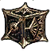
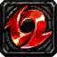
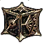
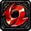

Le raid de groupe est un mode de jeu essentiel de par la variété et la quantité de ressources qu'il offre. Néanmoins, il est également difficile d'accès du fait qu'il requiert le plus grand nombre de serviteur pour un mode de jeu (neuf).
Les récompenses sont divisées en deux groupes : jusqu'au cinquième étage inclus, vous pourrez y obtenir (entre autre) des pierres d'amélioration de potentiel  . A partir du sixième étage, elles seront remplacées par des artefacts  et des pierres d'échange de potentiel  (pour potentiel spécial 5). Le cinquième étage étant de loin la meilleure source de pierres d'amélioration de potentiel du jeu, ce sera pour un bon moment votre objectif principal. Néanmoins, les artefacts et les pierres de spé5 étant parmis les ressources les plus rares du jeu, vous voudrez très vite pouvoir les farmer également. A ce propos, les quantités de récompenses augmentant à chaque étage, je ne préconise pas de farmer les étages 6 ou 7 qui offre des quantités vraiment dérisoires d'artefacts comme de pierres d'échange de potentiel .
. A partir du sixième étage, elles seront remplacées par des artefacts  et des pierres d'échange de potentiel  (pour potentiel spécial 5). Le cinquième étage étant de loin la meilleure source de pierres d'amélioration de potentiel du jeu, ce sera pour un bon moment votre objectif principal. Néanmoins, les artefacts et les pierres de spé5 étant parmis les ressources les plus rares du jeu, vous voudrez très vite pouvoir les farmer également. A ce propos, les quantités de récompenses augmentant à chaque étage, je ne préconise pas de farmer les étages 6 ou 7 qui offre des quantités vraiment dérisoires d'artefacts comme de pierres d'échange de potentiel .
Chaque semaine, vous aurez droit à 140 entrées en raid de groupe, plus 10 par jour en regardant une vidéo (via le petit + à côté du compteur d'entrées). Vous pouvez, c'était d'ailleurs initialement le but du contenu, jouer avec d'autres joueurs ou utiliser, une fois par jour, leur équipe de soutien, mais dans ce cas, vous ne pourrez pas lancer les combats en boucle. Je vous recommande de faire du raid de groupe tous les jours pour récupérer la monnaie du mode, les points de groupe, de la mission quotidienne associée. Ces points, utilisables dans la boutique dédiée, vous permettront d'acheter d'avantage de ressources précieuses.